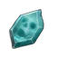
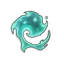

Spectral birds are power level 1 non-aggressive spirit birds found within the region of Fellhollow, on ruined buildings. They look like spiritual versions of gyrfalcons.
Drops
The following drop rates are provided by Jagex, unless otherwise specified.
| Item | Quantity | Rarity |
|---|---|---|
 Soul Fragment | 12–15 | Common |
 Ectoplasm | 1 | Uncommon |
This guide is the wiki's Spectral Bird article, by its editors, reformatted for this site. Licensed CC BY-NC-SA 3.0.